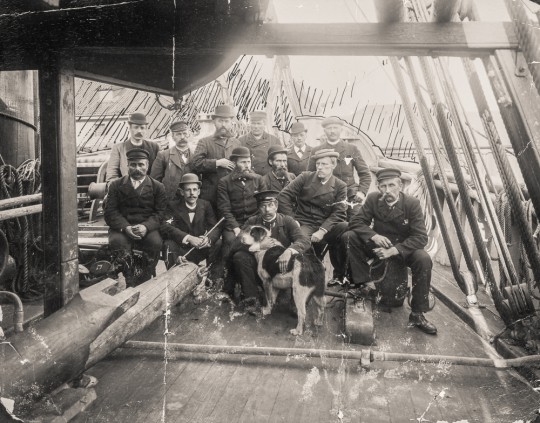
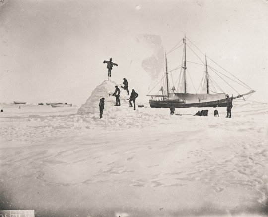
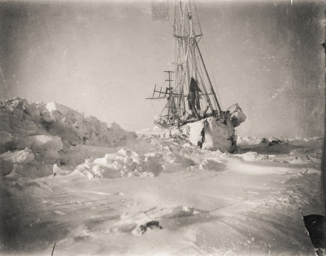
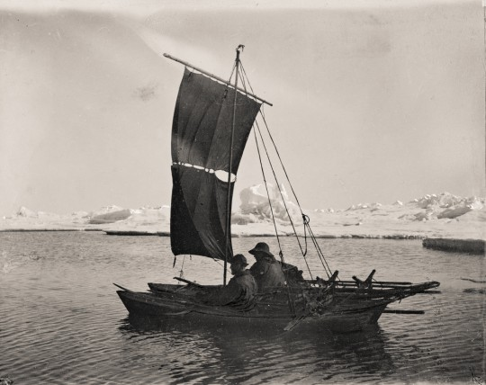
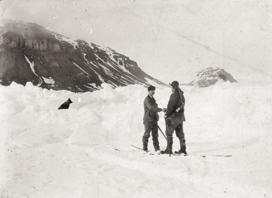
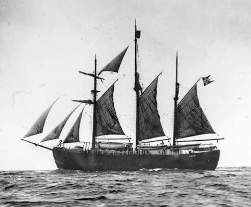

After months of preparation, we are finally on our way. Today the Fram sets sail to the Geographic North Pole. The crew is full of excitement, but we all know it will be a long and challenging journey.

We have been trapped in the ice for several weeks now. The Fram is drifting northward, and we are making slow progress. The cold is intense, but the crew remains determined and hopeful.

Our progress has been slow, will we not reach the North Pole. I have decided we must try by foot. We have prepared sledges and supplies for the journey. I am thinking of taking Johansen with me, as he is an experienced Arctic traveler. The journey will be perilous, but we must try.

After days of traveling over the ice, we have encountered a series of pressure ridges. The terrain is treacherous, some days we are drifting further south than we can advance north. Moreover, the ice becoming unstable, and we are constantly at risk of falling into the freezing waters below.

Its months since we began our return journey. After months of struggle, killing our dogs for food, we reach jozefland. It was to late however, to attemt to reach the mainland and we had to overwinter on Jozefland.

The Fram returned in triumph to Oslo (then Christiania), bringing back a wealth of oceanographic and meteorological data